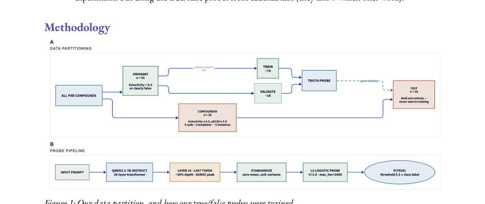
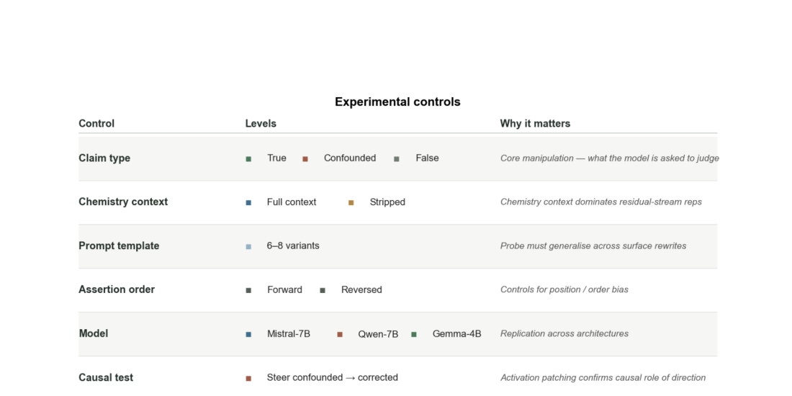
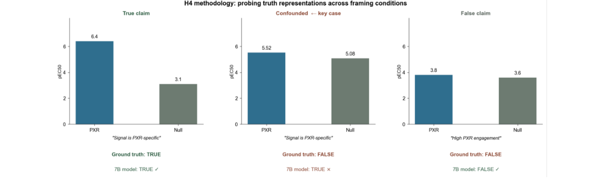
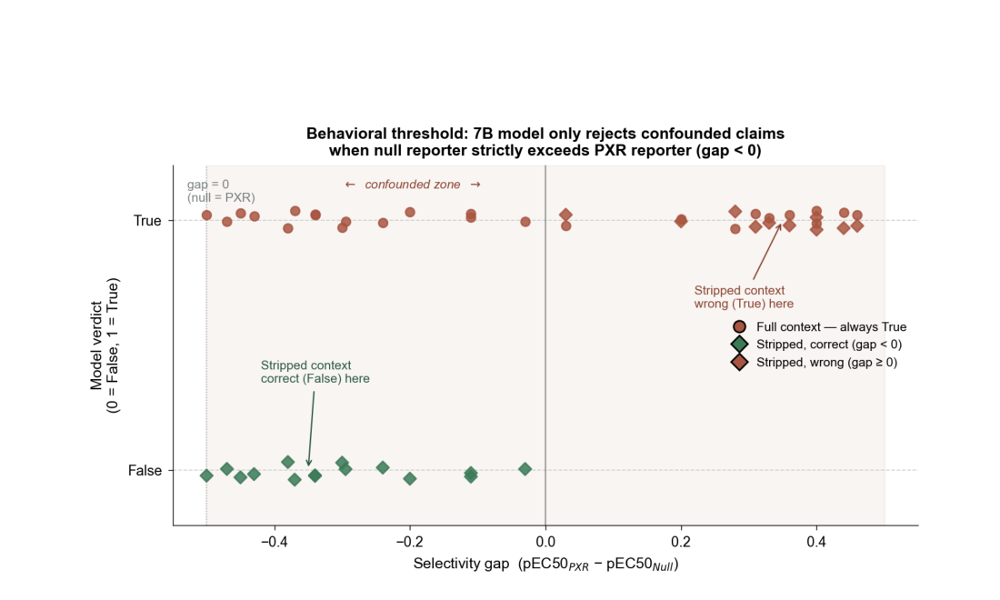
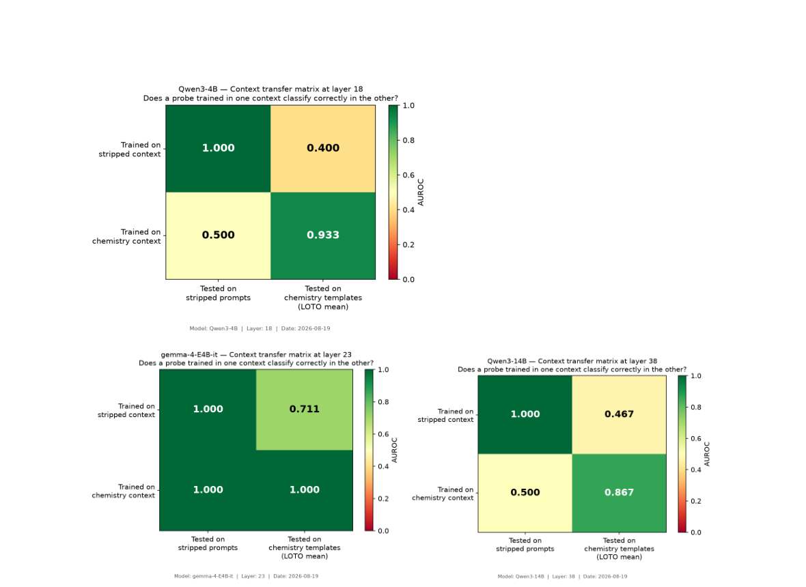
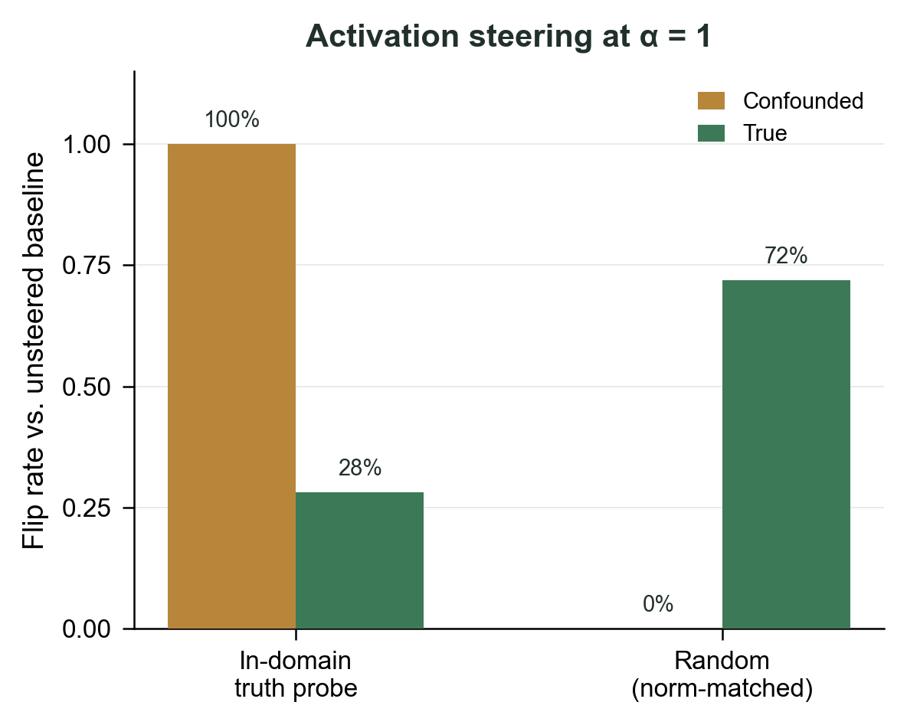
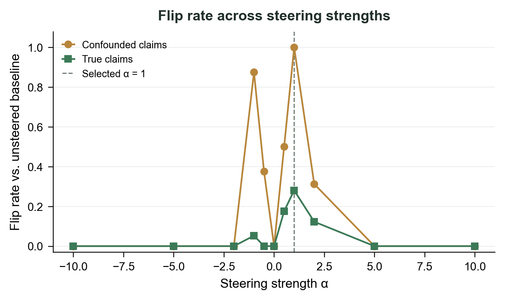
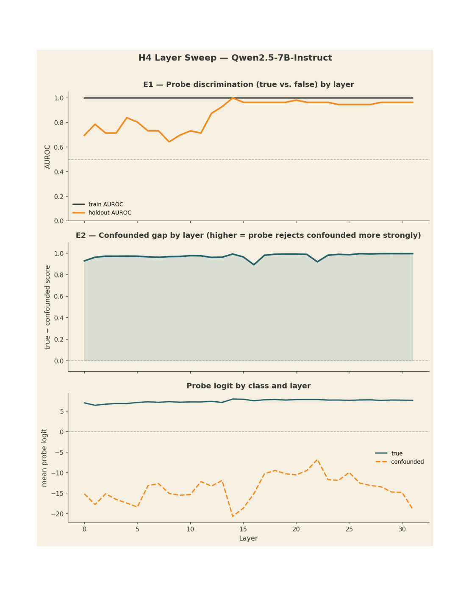

Hypothesis
- In activation space, is there a direction that separates prompts where the assertion is chemically true from prompts where it is chemically false? Can we steer across these, using selectivity as a case study?
- Using true, confounded, and false claims...
Contextualizing why we're doing this
- There are lots of true/false probes, and it is a natural question to see how they generalize across models, to more specific science-related contexts
- Personal note: This section needs to be filled out still! Manjari suggested as next steps, also trying experiments but using the true/false probes from cadenza labs (they know which ones work).
Methodology

We had three types of claims: true, confounded, and false.
- A true claim is straightforwardly true, while a false one is very obviously false. These 'obvious' test cases were constructed using the H0 dataset, which was prefiltered to have a large gap between selectivity and potency.
What does a confounded claim look like, data partitioning-wise?
- All PXR compounds from the interp_benchmark and probe_benchmark datasets are split by selectivity label. Those with selectivity ≤ 0.5 AND pEC50PXR ≥ 5.5 are tagged as fake-out (confounded) and held out entirely from probe training.
What happens next?
- The remaining ordinary (True/False) compounds are split compound-disjointly into probe_train (~80%, ~74 instances) and probe_holdout (~20%, ~18 instances). The confounded set (n = 38 instances, 6 compounds × 2 templates × ~3 instances each)
We included 4 models: Mistral-7B-instruct-v0.3, Qwen2.5-7B-instruct, gemma-4-E4b-it, and Qwen3-14B
| Model | # Layers | Hidden dim | Parameters | instruct-tuned? |
|---|---|---|---|---|
| Mistral-7B-instruct-v0.3 | 32 | 4096 | ~7B | Yes (v0.3) |
| Qwen2.5-7B-instruct | 28 | 3584 | ~7B | Yes |
| gemma-4-E4b-it | 34 | 2560 | ~4B | Yes |
| Qwen3-14B | 40 | 5120 | ~14B | Yes |

- At some point I was experimenting and realized that things look incredibly different based on how direct the prompt looks like, so we had 6-8 variants.
- On the to-do is to run this again, but with the SIMPLEST assertion possible (for a ninth variant)
Sample prompt:
You are an expert toxicologist. Molecule X (SMILES: COCCOC1CC(CO)CN(S(=O)(=O)C2=CC(F)=CC=C2C)C1) was tested in a human PXR luciferase reporter (pEC50 = 5.52) and a paired PXR-null luciferase reporter (pEC50 = 5.08).
Assertion: "The primary reporter signal for this compound is PXR-specific and is not explained by non-specific luciferase activity."
Is the assertion True or False? Answer with a single line: Assertion: True or Assertion: False.
Ground truth: False. The compound activates both reporters at nearly the same potency (5.52 vs 5.08 pEC50). The signal is non-specific luciferase activation, not PXR engagement. A toxicologist reading those two numbers carefully should reject the specificity claim immediately: PXR specificity requires the primary reporter to be substantially stronger than the null. Both 7B models (that we tested) say True regardless.
We wrote 4 chemistry-context prompt templates (stating that a compound is or is not PXR-selective). We also wrote 4 stripped-context templates (anonymous numerical comparisons). Every template produces a true and false version using real compound data from the dataset. In other words, we have 4 templates, let's call them "families", and for each template for each molecule we either have one which the claim that is true and one where the claim is false.
At this point... I was curious. QUESTION: how prompt-dependent is this true/false vector? Can we (in the scope of this experiment :P) find something that generalizes across 6-8 versions of the chemistry context prompt?
Caveat:
- Linear probe.
- Sweeping can probably be done again to VERIFY
- That's on the to do :)
Results

Also notable is that the 7B models were not able to understand selectivity UNTIL the null response assay number was actually just larger than the PXR number. Smaller magnitudes didn't really matter
On Behavioral threshold
A behavioral threshold refers to the point at which models will demonstrate a behavioral response to a stimulus (claim). More practically, it is the pEC50 gap below which the model stops calling a compound 'selective' and switches to 'not selective'. The plot shows that threshold is nearly the same regardless of whether the prompt uses chemistry framing or stripped/anonymous numerical framing, but varies by model.

- there is a flip! That happens at gap = 0
- Every compound with gap < 0 (null > PXR, even by 0.03 log-units) gets correctly rejected under stripped context. Every compound with gap ≥ 0 (PXR ≥ null, even by 0.03) gets wrongly assigned True. Full context is always True regardless.
Also ran versions of the prompt without the chem context, did better on confounded prompts....
Mistral (AND QWEN) at ~16 layers has literally antipodal truth representations across template families. The selectivity geometry and inactivity geometry for "true/false" are pointing in opposite directions in the residual stream.
Also with figures below, it seems that Gemma 4B probes generalize from chemistry to stripped, but not other way around as strongly. Also, for other 4B models, the probe doesn't work in either direction!
- crazy!
On probing
Whether a direction for 'truth' can be found in the residual stream, and whether it generalizes. We train an L2 logistic-regression probe on the residual stream at the final token on held-in templates, and evaluate on held-out templates (LOTO = leave-one-template-out). Accuracy is AUROC.
An L2 logistic-regression probe trained on the 'truth' direction with chemistry context achieves LOTO AUROC above 0.9 at layer 16 for Mistral-7B and Qwen2.5-7B, and above 0.93 at layer 23 for gemma-4-E4b. This indicates the model separates true vs. false claims linearly in its residual stream, and the direction generalizes across different prompt phrasings.
Context transfer
Context transfer — does the chemistry-context direction work on stripped prompts, and vice versa? This 2×2 matrix tests: if I train an L2 logistic-regression probe in one context, does it correctly classify claims in the other context?

What we found: the matched-pair L2 logistic-regression direction is family-specific. When you hold out one contrast family and refit the direction on the other three, it fails to classify the held-out family above chance. That means the direction is capturing something about the particular true/false contrast used in training — the phrasing, the compound type, the claim structure — rather than a single abstract "this claim is true" axis that runs through all of them.
The nuance — layer 19 OOD: that result is pulling in a different direction (no pun intended). The OOD test strips all chemistry framing and presents just the numerical comparison. At layer 19, the L2 logistic-regression direction built from chemistry templates correctly classifies those stripped prompts with AUROC 0.972. That suggests there is something at layer 19 that aligns with the underlying numerical comparison, even though it doesn't transfer across chemistry-framed templates.
So the picture is more like: there may be a numerical-comparison direction at layer 19 that the model uses for pEC50 comparisons in general, but the chemistry framing introduces template-specific offsets that dominate the signal when you test across templates. The L2 logistic-regression direction absorbs those offsets rather than averaging them away.
Results part 2 (IN PROGRESS)
Then tried to see if we could do activation steering to turn confounded claims from true to false (correct)
This worked without incorrectly steering any actually true or actually false claims away


Open questions
- So Gemma 4b was better! Do we know why?
- How can we even answer this question
- Potential hypotheses to investigate:
- More chem training
- Understanding what differences thing
Appendix
Question: So why did we choose L16 for Mistral/Qwen?
Answer: sweep, and it was highest on the hold-out AUROC. But to be honest the other layers might have something interesting, so this is on the to do.
